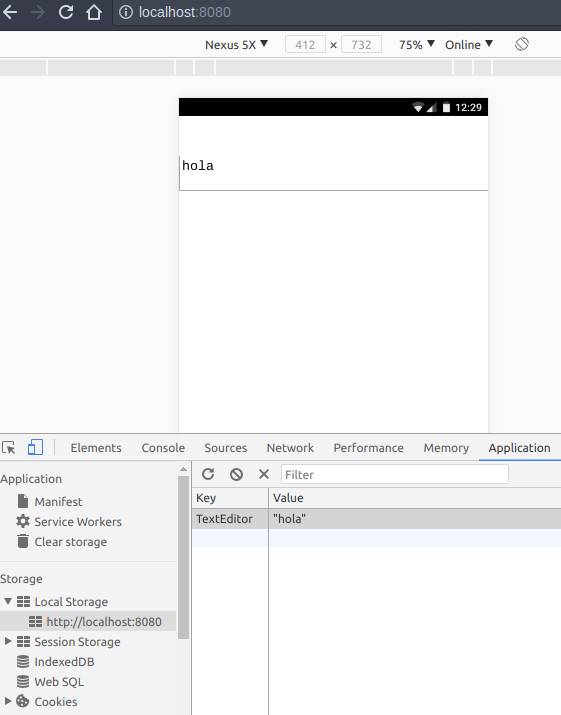

First let’s delete everything that we don’t need for our text editor in our main.dart file.
import 'dart:html';
void main() {
TextAreaElement theEditor = querySelector("#editor");
}We are going to use Local Storage which is a build-in functionality of HTML5.
1import 'dart:html';
2import 'dart:convert' show JSON;
3
4void main() {
5 TextAreaElement theEditor = querySelector("#editor");
6 theEditor
7 ..value = loadDocument()
8 ..onKeyUp.listen((_) => saveDocument(theEditor));
9}
10
11String loadDocument() {
12 String jsonString = window.localStorage["TextEditor"];
13 if (jsonString != null && jsonString.length > 0)
14 return JSON.decode(jsonString);
15 else
16 return "";
17}
18
19void saveDocument(TextAreaElement theEditor) {
20 window.localStorage["TextEditor"] = JSON.encode(theEditor.value);
21}First we import the dart:convert library which we will use to transform the theEditor.value to json format (encode) since LocalStorage requires that its items to be json format and untransform it to a simple string (decode)for theEditor.value. With the keyword show, we just make it more clear that we are only want to use this property from the library and it makes more clear our intentions.
import 'dart:convert' show JSON;After that we use cascate notation in the theEditor object which make more easy to read the code.
We call the loadDocument() function and assign its return value (a string) to the theEditor.value.
Then we call the onKeyup.listen method which will be listen to every key stroke we made until we finish the application (in this case closing the browser).
On every stroke onKeyup.listen will call an anonymous function (_) and this anonymous functon will call the saveDocument() function.
The onKeyup.listen() method returns a object of type KeyboardEvent but since we won’t be using it, we descart it with the _ in the anonymous function.
theEditor
..value = loadDocument()
..onKeyUp.listen((_) => saveDocument(theEditor));In the loadDocument() first we assign the content of “Local Storage” by passing a key value in this case TextEditor using the window.localStorage[] method. If window.localStorage[] does not find the key (TextEditor) it will asing null to jsonString variable. Then we check if jsonString is not equal to null and bigger its length is bigger than zero just to double check if there is a value in the Local Storage. If there is a value we use the JSON.decode() to transform the value from json format to just a simple string. And if there is not a value in the “Local Storage” we return and empty string.
String loadDocument() {
String jsonString = window.localStorage["TextEditor"];
print(jsonString);
if (jsonString != null && jsonString.length > 0)
return JSON.decode(jsonString);
else
return "";
}In the saveDocument() function we recieve the theEditor variable an assign its value to the Local Storage with the key TextEditor but first we transform it to json format using the JSON.encode() method.
void saveDocument(TextAreaElement theEditor) {
window.localStorage["TextEditor"] = JSON.encode(theEditor.value);
}You can go to Developer tools in Chrome and check the Local Storage like shown in the image.

Run pub serve on the root of the project and go to http://localhost:8080/ in your browser.
Result: part04.
Check the source code.